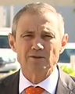

Mind reading Australian politics.
Originally the plan was to make comic strips with proper speech and thought bubbles, but I don't think I can pull that off with just HTML and CSS. So if you see offset text in Comic Neue, it's supposed to be in a thought bubble.
Welcome to the program 🎉😊.
Brought to you in the safety of Western Australia.
Don't come. We don't want you.
If someone wants to challenge that in the High Court, good luck to them. I say, you know, fill your boots.